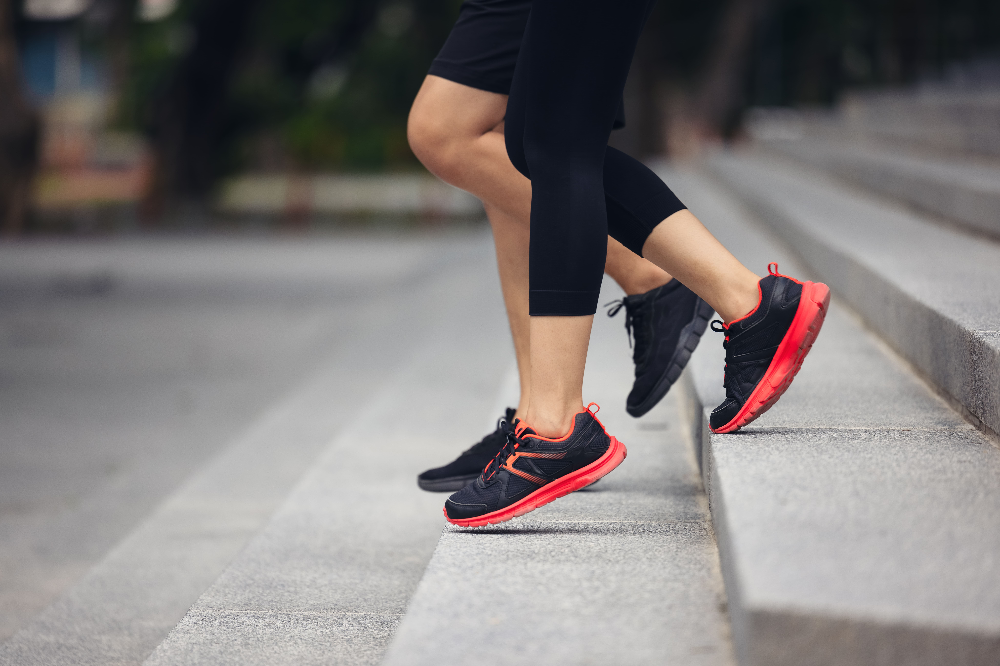
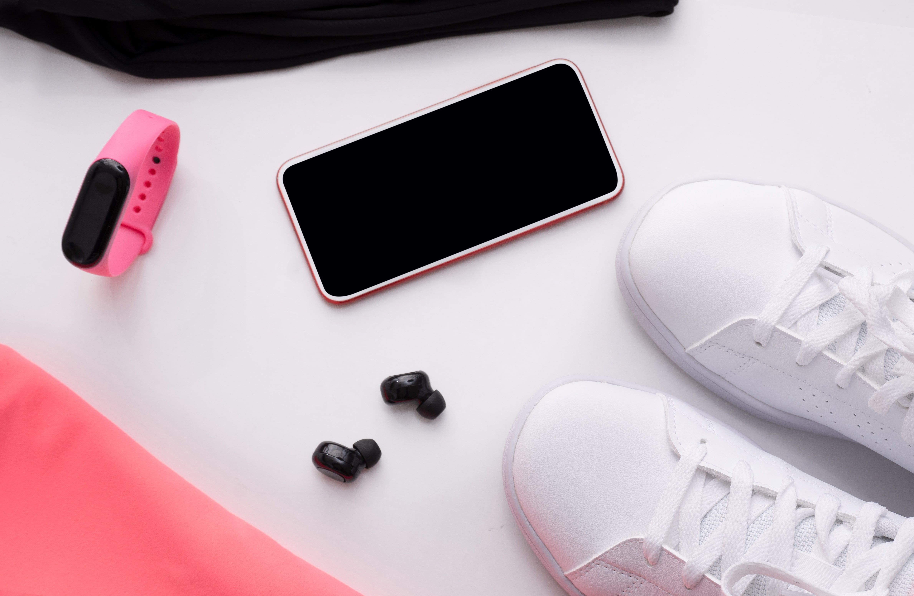

Sekarang lari bukan cuma tentang jarak atau kecepatan — tapi tentang gaya dan mindset. Banyak anak muda, terutama Gen Z, memulai lari karena ingin hidup lebih sehat dan tetap stylish di waktu yang sama.
Kalau kamu termasuk yang baru mau mulai, tenang — artikel ini bakal bantu kamu dari outfit, alat, sampai tips mental biar kamu bisa enjoy the run tanpa merasa terintimidasi sama pelari lain.
1. Tentukan Tujuan Lari Kamu
- - Menjaga kebugaran?
- - Menenangkan pikiran?
- - Ikut event seperti fun run 5K?
- - Atau sekadar healing run tiap sore?
Menentukan tujuan bikin kamu punya arah. Kalau kamu tahu alasannya, kamu nggak akan mudah berhenti.
Insight: Nggak semua pelari harus kompetitif. Banyak Gen Z justru lari buat reset mental — bukan ngejar pace.
2. Pilih Sepatu Lari Sesuai Gaya & Kebutuhan

Sepatu itu investasi utama pelari. Salah pilih bisa bikin cepat cedera atau nggak nyaman. Berikut rekomendasi running shoes yang cocok buat pemula Gen Z:
- - Nike Pegasus 41 : Ringan, empuk, cocok untuk lari jarak pendek-menengah
- - Hoka Clifton 9 : Sol tebal tapi nyaman, cocok untuk lari santai
- - On Cloudsurfer : Desain stylish, cocok buat pelari yang juga peduli estetika
- - Adidas Ultraboost Light : Cushion empuk, cocok untuk pelari pemula dan harian
- - ASICS Novablast 4 : Supportive, cocok buat kaki cepat pegal
Quick Tip: Pastikan kamu pilih sepatu ½ ukuran lebih besar dari ukuran biasa — kaki akan sedikit membesar saat lari.
3. Outfit Wajib Buat Running yang Nyaman dan Kece
Outfit lari yang tepat bisa bikin performa meningkat sekaligus bikin kamu percaya diri. Berikut item wajib versi Gen Z runner starter pack:
- - Running Top : Pilih bahan dry-fit atau quick-dry agar keringat cepat menguap. Rekomendasi: Nike Dri-Fit Tee, Uniqlo Airism, Lululemon Swiftly Tech.
- - Bottom : Celana pendek running atau legging ¾ buat fleksibilitas.Rekomendasi: H&M Move Running Shorts, Adidas Own The Run Tights.
- - Sports Bra (buat perempuan) : Pilih yang support tinggi tapi tetap breathable. Rekomendasi: Lorna Jane Compress, Decathlon Kalenji High Support.
- - Topi / Visor : Biar nggak silau dan bisa tetap gaya.
- - Socks : Pilih bahan lembut dan seamless agar nggak lecet.
- - Running Belt : Buat nyimpan HP, kartu, atau kunci tanpa ribet.
Style Hack: Pilih outfit warna cerah atau pastel — selain bagus buat konten, juga bikin kamu terlihat lebih fresh di pagi hari.

4. Gadget Pendukung Biar Lari Lebih Seru
Gen Z selalu butuh gadget companion buat jaga motivasi. Berikut rekomendasi perangkat kecil yang bikin lari makin semangat:
| Gadget | Fungsi | Rekomendasi |
|---|---|---|
| Smartwatch | Tracking jarak, pace, detak jantung | Garmin Forerunner 165 / Apple Watch SE |
| Earbuds Tahan Keringat | Dengerin musik/podcast saat lari | Jabra Elite Active / Beats Fit Pro |
| Running Tracker Apps | Catat progres & peta rute | Strava, Nike Run Club, MapMyRun |
| Waist Bag / Arm Band | Simpan HP dan kunci dengan aman | Decathlon / FlipBelt |
Fun Fact: Banyak komunitas lari di Bandung bahkan berbagi playlist Spotify khusus buat sunrise run vibes!
5. Mental Game: Kunci Konsistensi Pelari Pemula
Kebanyakan orang berhenti lari bukan karena lelah fisik, tapi karena mentalnya duluan menyerah. Berikut cara jaga mindset biar tetap konsisten:
- 1. Jangan bandingin pace kamu dengan orang lain.
- 2. Fokus ke progres, bukan hasil.
- 3. Nikmati tiap langkah — jadikan waktu lari sebagai me time.
- 4. Coba sistem "1% better each day" — tambah jarak atau durasi sedikit demi sedikit.
- 5. Rayakan pencapaian kecilmu: lari pertama 2 km pun pantas diapresiasi.
Insight: Motivasi terbaik datang dari rasa bangga setelah selesai — bukan dari siapa yang lebih cepat.
6. Jaga Pola Makan & Hidrasi
Biar performa stabil, tubuhmu perlu “bahan bakar” yang tepat. Sebelum lari, konsumsi:
- Pisang + kopi hitam (buat energi cepat)
- Air putih cukup (250-500 ml)
- Hindari makanan berat dalam 1 jam sebelum lari
Sesudah lari:
- Minum air + elektrolit (air kelapa alami recommended)
- Protein ringan (smoothie, telur rebus, greek yogurt)
- Stretching minimal 5 menit biar otot nggak kaku
7. Spot Favorit Lari Gen Z di Bandung
Kalau kamu tinggal atau lagi main ke Bandung, beberapa spot ini cocok buat pemula:
- 1. Lapangan Gasibu- klasik, ramai, dan punya jalur datar.
- 2. Babakan Siliwangi- rindang dan adem.
- 3. Dago Dreampark Trail- buat kamu yang suka suasana alami.
- 4. GOR Pajajaran- aman, teratur, dan banyak komunitas latihan di pagi hari.
- 5. Gedung Sate Area Loop- iconic dan Instagrammable banget pas sunrise.
Bonus: Banyak komunitas lari di Bandung yang buka untuk publik. Kamu bisa gabung lewat Instagram, cukup DM dan datang ke sesi “open run”.
Lari Itu Gaya Hidup, Bukan Tugas
Buat Gen Z, lari bukan sekadar olahraga — tapi bentuk self-expression dan perawatan diri. Dengan outfit yang nyaman, alat yang mendukung, dan mindset yang ringan, kamu bisa menikmati perjalanan tanpa tekanan. Mulai dari pelan-pelan, nikmati ritmenya, dan biarkan lari jadi bagian dari identitasmu.